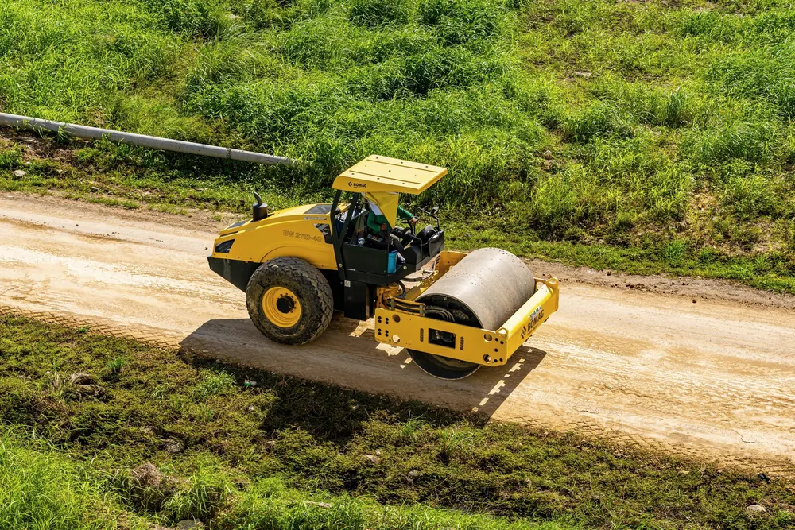

Ceļi un laukumi
Vadām ceļu būvdarbus un veicam būvuzraudzību: pievedceļi, grants un asfalta ceļi, laukumi un stāvvietas. Sekojam, lai katra kārta būtu izbūvēta pēc projekta.
- Zemes klātne un pamatne
- Šķembu un grants kārtas
- Asfalta un bruģa segumi
- Grāvji un caurtekas
